Do you own a website? Do you use a Unix-like operating system? Or maybe you use an obscure non-Unix system like KolibriOS, Haiku, or Plan9. This place is for you! Whether you're a hardcore believer in Unix philosophies or a casual Linux user who owns a website, you're free to join the *nix systems webring.
To be accepted, your site must not be empty and must contain something related to technology, FOSS, or *nix, be it software or hardware. It does not have to be the focus of the site.
Dead sites and sites that do not add the widget within a month of admission will be removed without notice to maintain webring health.
Email: radiohotline[at]disroot[dot]org
Image of Tux by Larry Ewing and The GIMP, Attribution, Link
Submission form:
JS Widget:
JS-Free Widget (replace {YOURSITE} with your site URL [without https://]):
You may also generate widget code here:
The default icon is Tux. You can replace "tux" with any of the following icons. If your OS is missing, I will automatically add it when you join.
Members
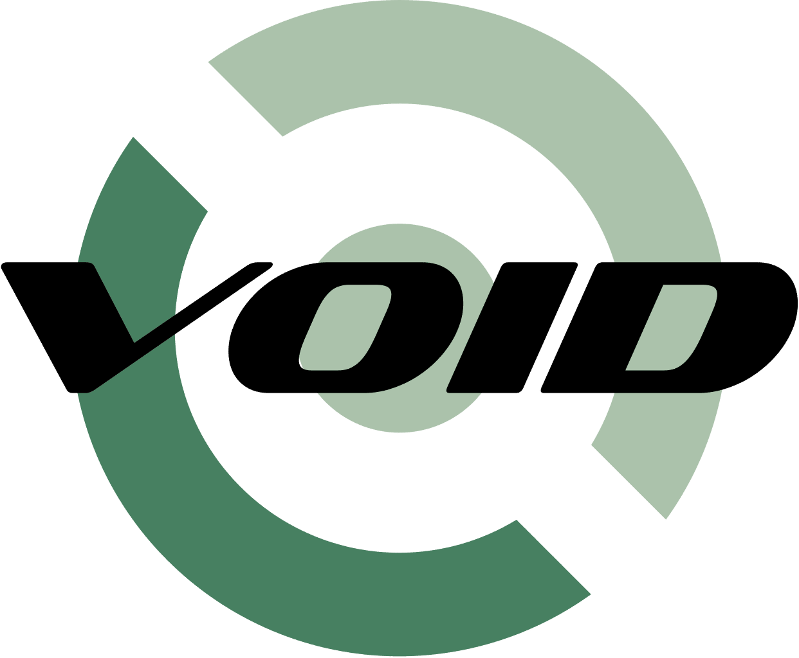 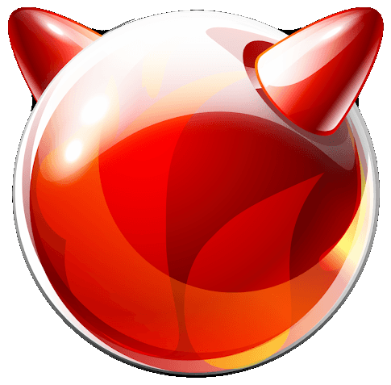 |
softmachine.dev | Soft Machine is a corner for my thoughts, art, music, and writing — a piece of me. |
| iwillneverbehappy.neocities.org | Personal blog w/ artwork and sporadic posts, mainly about artmaking and FOSS :*) | |
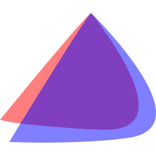 |
🦘🌎.ws | A website dedicated to the WorldsPlayer chat program from 1998 and onward, featuring modding tutorials and user-generated content for Worlds.com. |
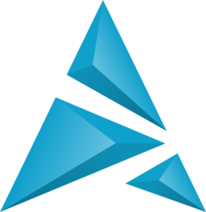 |
wirlaburla.worlio.com | A personal page for old software, programming, linux, and nerding out. |
| hoppingtopping.com | A personal website themed after my current interests and dedicated to anyone who's interested in browsing it. | |
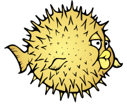 |
kaa.neocities.org | A place hosting the creations and appreciations of a young adult. |
| foreverliketh.is | Both a personal website and digital garden. Themes include: Education, Life, Psychology & Journaling | |
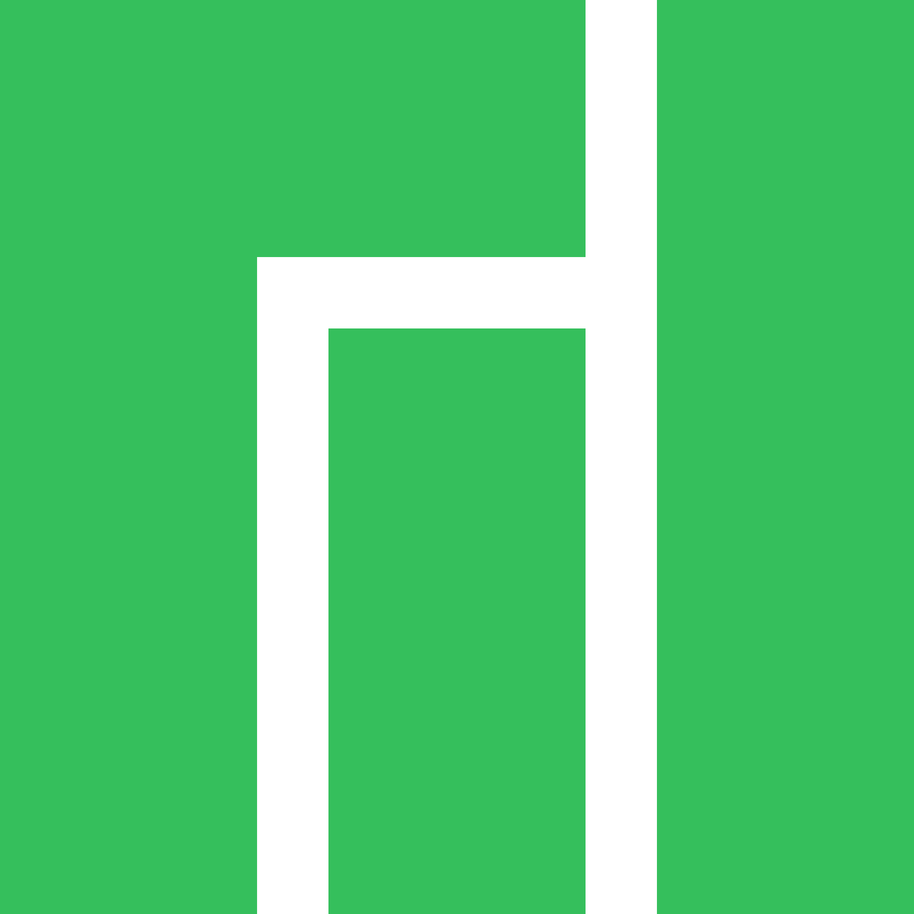 |
karma.computer | A digital garden planted with my thoughts and works and anything else I find interesting! |
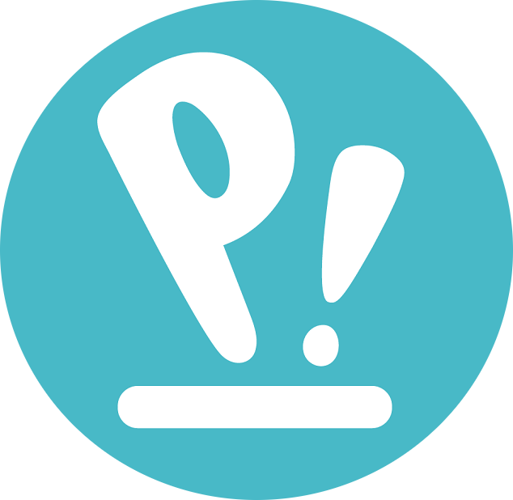 |
azuremillennium.neocities.org | A personal website composed mostly of writing where I put anything related to my interests. |
| i330.dev | Small blog & archive of stuff that I find interesting. Mostly technical stuffs & linux goodies in the works. | |
| alan460.is-hella.gay | Half personal website, half hoard of everything that I've ever known & felt. | |
| crystal.tilde.institute | a personal website where i share my opinions and random things i find interesting (currently WIP) | |
| skeleg.org | Personal site where I post projects, blog posts and pictures I take. | |
| cronico.neocities.org | Bilingual (spanish/english) personal website where I show my art, I talk about books and I rant about things I hate or love. | |
| theaio.neocities.org | Personal website containing whatever i feel like posting :) | |
| risingthumb.xyz | Personal Website of RisingThumb, philosophy, software development, tech and other writings for stuff that interests | |
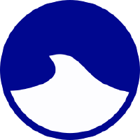 |
leap123.neocities.org | My personal website with a blog. Posts whenever I felt like it. |
| tepiloxtl.net | Personal site I tippy-tap on about tech or games or who knows what actually 😊 | |
| antares.neocities.org | [English, français, 日本語] FOSS and Linux gaming blog with a PeerTube channel. Occasional random topic and surprises. | |
| avas.space | Personal site with pixel art, a terminal look, some info on the owner, a blog & some hidden secrets. | |
| 0xf0xx0.eth.limo | A personal website by a fluffy nerd, hosted on IPFS~ | |
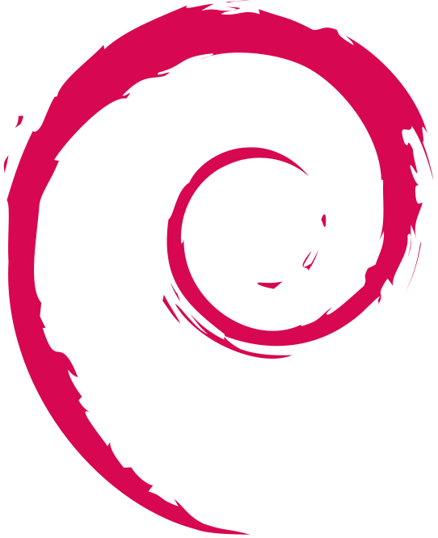 |
ophanimkei.com | A personal site of a lolita featuring art, essays, and other various ramblings |
| kinisis.xyz | A personal website & blog with a focus on Linux, digital independence and more. | |
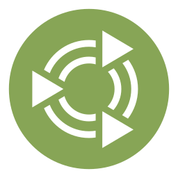 |
baccyflap.com | personal page about lots of things |
| charon.monster | Charon Faustinus's website and personal blog. | |
| circulars.dev | my own personal website with a bunch of cool stuff (and blog posts every once in a blue moon) | |
| tommi.space | The virtual representation of a messy and explosive mind. | |
| patrickwu.space | Peronal blog about my dev notes with slices of my rant and sometimes my life | |
| corvidae.digital | my personal digital space! features my art, blog, collections, and more! 😃 | |
| raum.neocities.org | personal website with a generous dose of jellyfish. | |
| avidseeker.github.io | An avid seeker of knowledge, technological freedom, and privacy. Into real sustainability that is only achieved with Free Software. | |
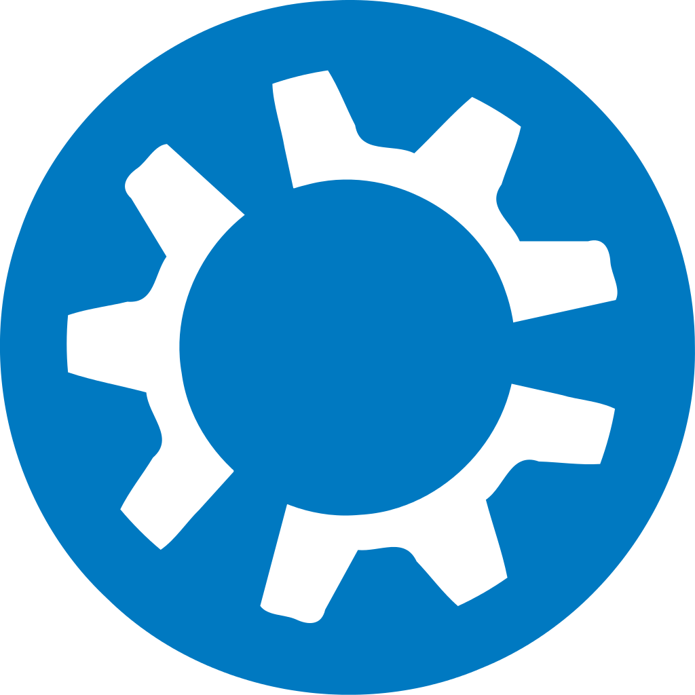 |
www.dreamwingsthegriffon.com | A birb on the internet puts up whatever they want into a void. Misc collection of thoughts, likes, dislikes, art, writings, guides, links, and probably more things later. |
| nicolabelluti.me | My personal blog where sometimes I post something interesting about tech | |
| xx-starbrite-xx.neocities.org | Random all-purpose site where I post my thoughts and art. Forever doomed to be a work in progress! | |
| heart143.neocities.org | Where the heart lives | |
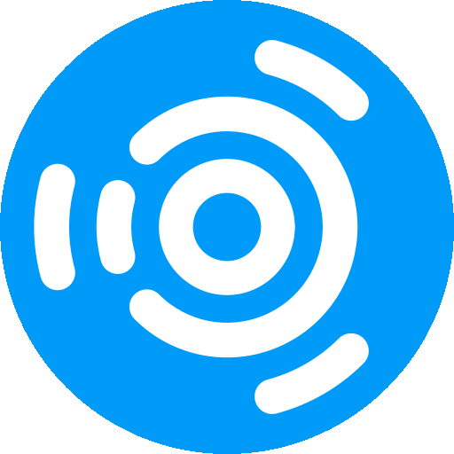 |
cassiecandles.net | Personal blog for my art, witchcraft, and various projects |
| mkultra.monster | A home for my many blog posts, and all of the things that I do, including music, fiction, & more. | |
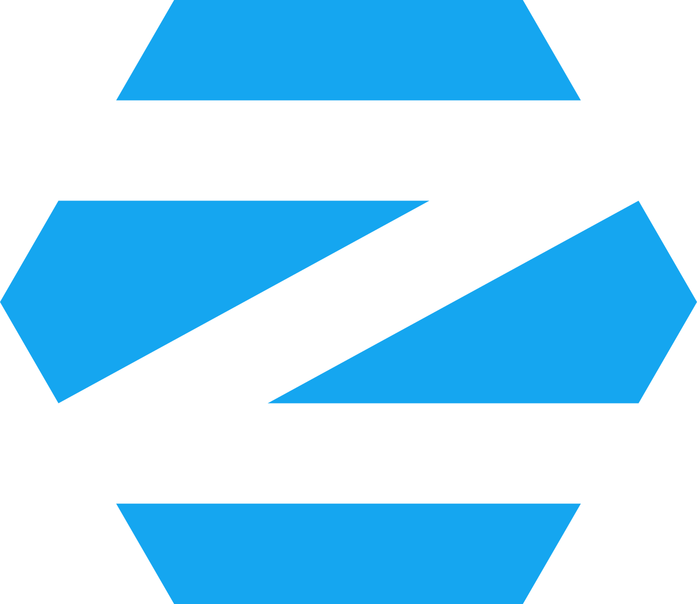 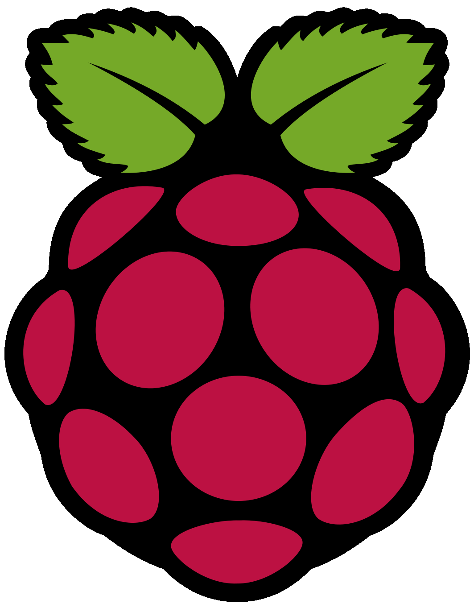 |
tiagorangel.com | my personal website I guess |
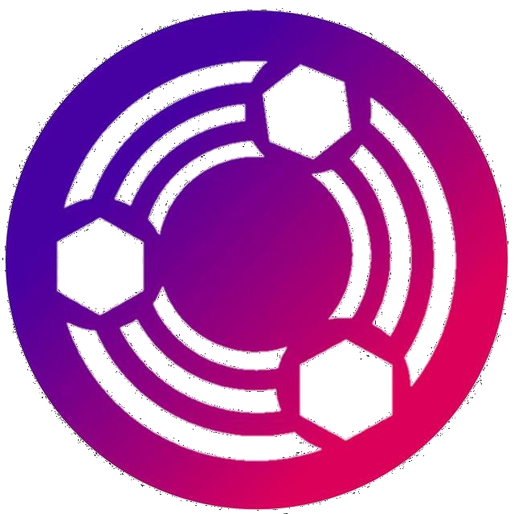 |
sharkcave.me | The web-home of a monster-fueled acid-blooded cat shark. Contains writings, shrines for my interests, and more to come! |
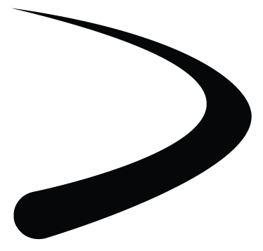 |
scuti.neocities.org | scuti's text garden of programming, video gaming, and real life adventures. Semi-professional online portfolio of C, Lua, Ada, and Python projects. |
| appak.neocities.org | appak's personal page, includes a long bio, button collection and personal links | |
| myrdin.cx | A minimalistic, personal website created by a linguist who is exploring the internet :) | |
| clygro.cc | The personal website where I ramble about my adventures making a website, web browser and a Linux distro, also some of my photos and other content is hosted there. | |
| fish.golf | fish 👏 golf 👏 fish 👏👏 | |
| dagurthehorrible.neocities.org | personal website with stuff I like | |
| spider-kyle.neocities.org | Personal site | |
| regirock.net | My website is just a small personal page that I maintain as a hobby project and a form of self expression. It's fun to make your own stuff! | |
| hazelthats.me | Personal website and blog of Hazel (that's me) | |
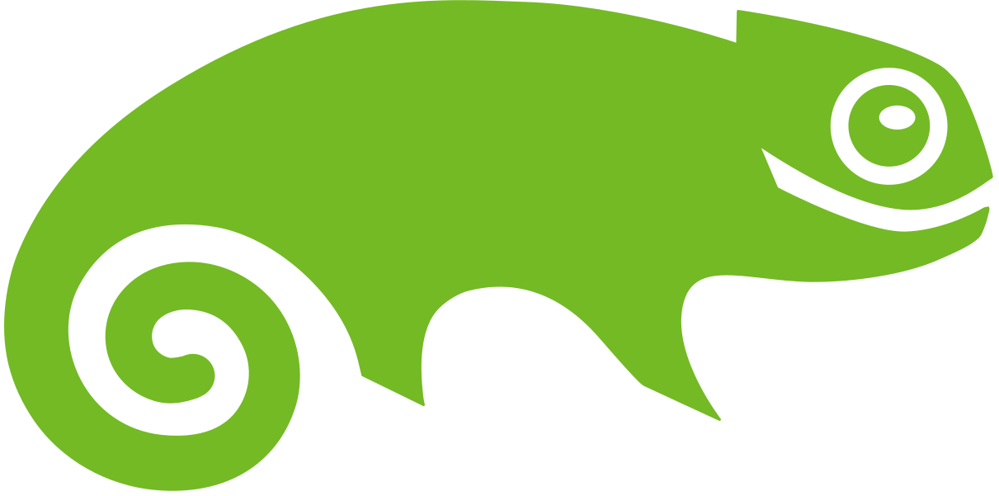 |
alexisgaming95.neocities.org | Making the unforeseeable future foreseeable. This is the official website of AGR, by Alexis himself! |
| lottalinuxlinks.com | The lottalinuxlinks.com linux user web blog is where an old linux user rambles on about linux, FOSS, movies, books, and other geekery. | |
| gorkem.cc | A personal website where I share open-source and open-hardware projects, along with tutorials | |
| riomc.cloud | Digital garden about a lot of things, but specially a technology blog | |
| unpop.neocities.org | A personal blog showcasing my favorite niche media, personal art, and coding projects. | |
| https://shittyweb.org/ | Its a place for me to talk about whatever random shit is on my mind. I talk about topics ranging from anime and music to deeper thoughts about the mind, society, and the universe. | |
| pogmom.me | Personal website which serves as a homepage for my FOSS & open internet projects | |
| april.nekoweb.org | The personal page of a trans girl who's been using GNU/Linux since 2011. I like to share my thoughts, make tutorials, and more! | |
| goodgirl.dev | This website contains general information about myself and my projects that I'm working on | |
| sor.neocities.org | Software recommendations, dotfiles, shell scripts, and links to useful online tools and resources. | |
| starcrush.net | A place to share my personal interests including music, art, and technoloy | |
| bytesofprogress.net | Blog and knowledge base about computers. Also has useful files and links. | |
| projectc190.net | Personal website featuring artwork, techy articles, book reviews, and more | |
| privatenoob.top | A tech and baking related personal site, with some additional quirkiness :3 | |
| alexzeecomedy.com | Alexzeecomedy.com is the online landing page for Alex Zee: stand-up comedian, content creator and FOSS/open-source enthusiast based in Huntsville, Alabama. | |
| wheelsbot.dev | A personal blog focused on tinkering with open-source software, primarily on Linux. | |
| 8y7.nekoweb.org | Mainly personal, but the majority of pages are about things I like. :) | |
| igor360.neocities.org | warning: it super silly | |
| zzfs.home.kg | A blog about tech but mostly FreeBSD and Linux. Also some programming related stuff as well. | |
| ari.lt | The personal website of Arija A. (Ari Archer), a neurodivergent, transgender open source developer and tinkerer from Lithuania, where she dedicates her time to open source projects, digital freedom, tech accessibility, and creative exploration - building a little corner on the interwebs focused on making technology open, hackable, and accessible to all. | |
| prigoana.com | personal site | |
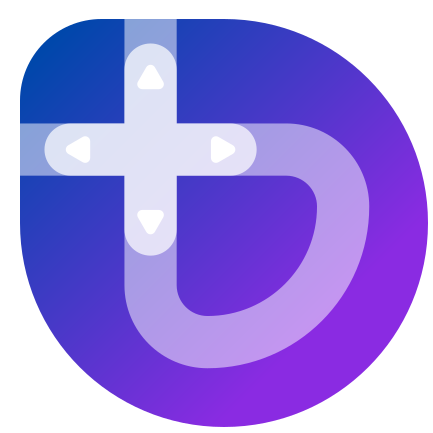 |
lukealexdavis.co.uk | The digital home of Luke Davis: a senior technical SEO, music producer, and blogger |
| kimberlygb.nekoweb.org | Raphire Win11Debloat | |
| maniksharma.xyz | cool website for a teen who likes cool stuff like proxmox and linux | |
| hisvirusness.com | Blog/personal platform/functional portfolio of a multimedia artist who created their own markup language specifically just to write the content of their website more efficiently. Whack. Job. Exclamation point. | |
| tx0.nekoweb.org | A personal page containing my blog on culture and technology, info on me, and whatever else I think is neat. | |
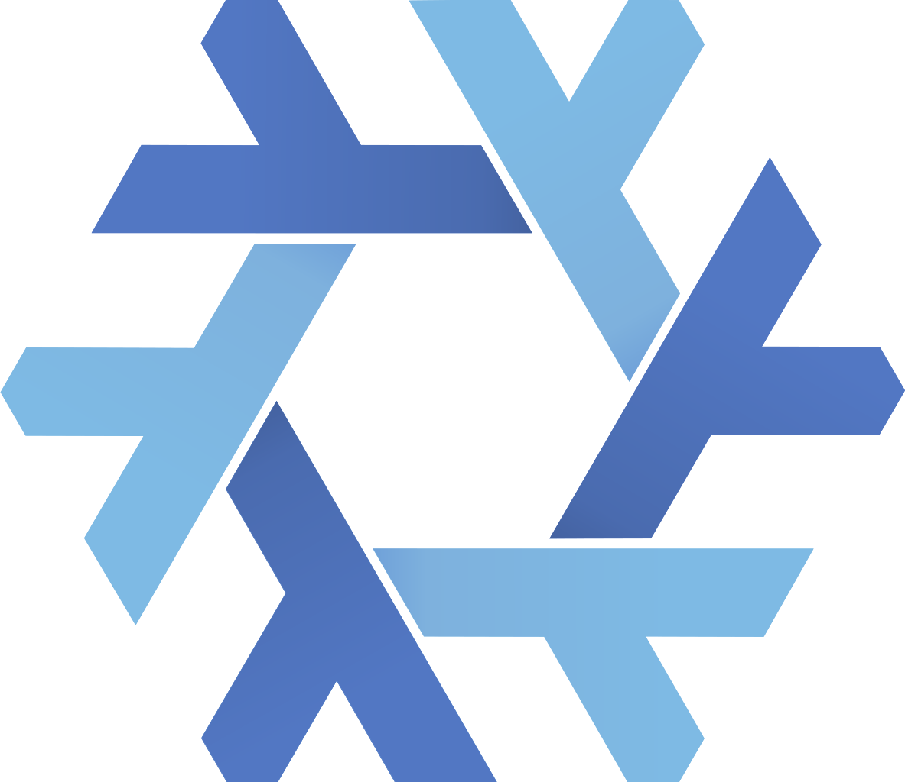 |
offensivename.com | I really hate computers |
 |
leroymilo.neocities.org | A personal site where I talk about stuff I like and share stuff I make (games, mods, software) |
| ficd.sh | Writings on text editors and Linux. Sometimes philosophy. | |
| skoove.dev | I like writing about technical topics and really anything I find intresting | |
| hexaitos.com | Personal website about various topics, including Linux, OpenBSD and tech (especially FOSS) in general. | |
| minxie.likesyou.org | a website of my own, where i host my projects, information and support for my project! | |
| blog.k3can.us | A blog about my hobbies, generally involving linux, ham radio, self-hosting, small internet, and other nerdy topics. | |
| kwaamfan.haliya.net | a personal website and blog, mostly about language learning, video games, knitting, and technology | |
| hamaonoverdrive.online | Personal website: indie visual novel development and discussion; technology and society; programming and art. The future is in our hands. | |
| mtgmonkey.net | a nerd site about primarily functional programming, including Haskell, Nix/OS, and Elm. Includes lots of links to other interesting sites and papers I find itneresting. In German and English. | |
| planty.one | A queer game designer and artist who loves technology, especially computer tech and software. | |
| 7vtia.nekoweb.org | A personal website and blog that is also a resources page. | |
| akselmo.dev | Ramblings about KDE development, Linux, Gamedev, FOSS in general and whatever personal things I come up with. | |
| joelb.xyz | A random place for me to put things up. May look completely different next time you see it! | |
| innocentzero.is-a.dev | A collection of my ramblings, notes, and other stuff - my home on the internet. | |
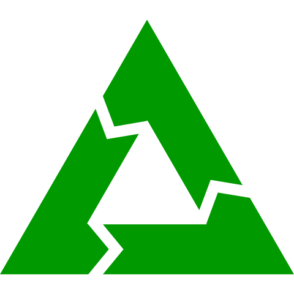 |
coolpickles.neocities.org | Nerdy aero-themed website about obscure/obsolete technology, non-standard linux, daily driving linux, tech news, and FOSS software/technologies. Featuring a blog, product reviews, and game reviews. |
| tech-absurdist.neocities.org | A blog on my personal journey about escaping the techno-matrix. | |
| wrywerytwreywery.stupid.pizza | whatever comes to mind, whenever it comes to mind. | |
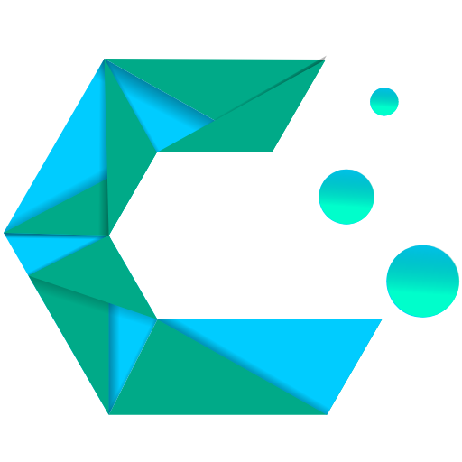 |
kami-g.me | My personal website with social links and links to various FOSS resources I advocate for using. |
| avaloathelace.neocities.org | my personal website for yapping about linux and other things :3 | |
| tapeykatt.neocities.org | The personal website of a silly chartreux cat from Chile. Mainly art and random stuff. | |
| http:saberonthe.net | A personal page where I ramble on about various topics. | |
| russecke.net | Electronics, computer hardware and software, general aviation, automotive, and related sundry. | |
| jarema.me | This is my little corner on the internet, I occasionally write blog posts, post some cats, share things about me and all that stuff 😛 | |
| spilk.neocities.org | Short blog of a linux admin. Inspired by i3wm/sway defaults | |
| interesting-corner.nl | personal website where I post blogposts, tutorials, hardware collection, photography and stories | |
| xn--xyv.dev | Recreational programming, self-hosting, etc... | |
| ynklingv.neocities.org | A personal website with stuff about myself my ideals and my creations, as well as creations from other people i enjoy | |
| www.veltron.net | Technology hub | |
| tilde.club~petbrain | Pet's experience in Linux and programming. | |
| themewiki.neocities.org | A wiki style personal website A.K.A. "The Modular Subjective Me Wiki of All Things and Stuff!" | |
| xavierhm.com | The personal site of an artist, writer, blogger, webdev, and all-around cool dude. | |
| markofiume.com | yet another indescribably boring website by an italian teen | |
| arcane.kitties.cat | my purrsonal site with all my projects and other junk! | |
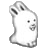 |
ohnoitsnoah.com | Personal wiki about art, programming, computing, and my life. |
| venus-territory.nekoweb.org | My resources page is useful, I usually do blogs about technology (screaming about minute Linux details) or dreaming. | |
| thelema.nekoweb.org | Personal blog. | |
| schizophyllu.meindex.html | skizy lives on the internet. | |
| girlkissing.tips | software projects, OS reviews, art, and cat pictures | |
| harakiri.moe | Personal blog with product reviews, including but not limited to tech reviews, as well as other reflections on subjects including the modern tech and Linux space. | |
| abmurrow.com | Personal blog of open source maintainer, NixOS contributor, and all-around Linux user. Lots of content about creative writing and building stuff with computers. | |
| http:arc-x.org | personal hardware and software tinkering, custom programming language, custom os. | |
| adrianvic.github.io | My personal handmade website with a blog where I talk about anything it's in my head. | |
| baristamae.neocities.org | Personal and digital archival site. Collections feature early internet public history initiatives and classic Y2K evangelicalism. | |
| ws.h4rl3y.xyz | My personal website with information about me, my blog, cooking, and anything else I want to share. | |
| cheztervargas.xyz | A tech portfolio with blogs written in a creative non-fiction manner or personal essays. | |
| callum.zip | My personal website/blog. I write about FOSS software, privacy, and whatever else i feel like | |
| gicorada.com | Personal website with links to my projects and (small) blog | |
| apenasgeisa.neocities.org | a forever in wip cozy website made straight from linux! | |
| howsoonisnow.org | Personal site for blogging, scrapbooking, musing, keepsakes, and a creative outlet. | |
| zushi.codeberg.page | Personal site built with Nix (spoonful) | |
| computatrum.nekoweb.org | Board of Computatrum, computer man who stuck in 2012 posts computery things and random thoughs | |
| orionbase.cc | a website of mine hosted on a Raspberry Pi home server | |
| restruct.nekoweb.org | My personal website where the *fetch es of my computer and my laptop live, Also sometimes contains stuff about old software or hardware. | |
| oli.xenia.gay | Yet another personal site made by a computer-obessed dog | |
| sophii.xyz | a personal website, linking to my blog, im porting stuff from my gopherhole (gopher://sophii.xyz) so its a bit barren right now. | |
| windigone.nekoweb.org | Just a small silly site where I talk about whatever comes in my mind. | |
| korin.neocities.org | A silly website where I blog, share photos, and talk a ton about linux! |